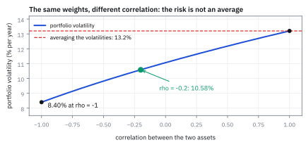
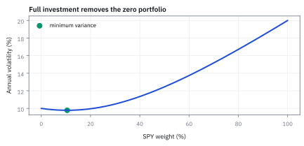

8.2 Linear Transformations and Portfolio Risk
คำนวณผลตอบแทนและความเสี่ยงพอร์ตผ่านการแปลงเชิงเส้น และพิสูจน์พลังของการกระจายความเสี่ยง
คุณแบ่งเงิน \$100 ครึ่งหนึ่งใส่กล่อง A ที่เพิ่ม 10% และอีกครึ่งใส่ B ที่เพิ่ม 4% เงินรวมเพิ่มกี่เปอร์เซ็นต์?
เฉลย: 7% คือครึ่งของ 10% บวกครึ่งของ 4% ค่าเฉลี่ยถ่วงน้ำหนักได้ตรง ๆ แต่ความผันผวนไม่ได้ ถ้ากล่อง A กับ B เหวี่ยงปีละ 20% เท่ากัน และขึ้นลงพร้อมกันทุกครั้ง ความผันผวนรวมยังเป็น 20% แต่ถ้าไม่เกี่ยวกัน จะเหลือราว 14% เพราะขาหนึ่งขึ้นตอนอีกขาลงเป็นบางปี ขั้นที่ 5 จะหาตัวเลขนี้ในกรณีทั่วไป
Linear transformation คือการรวมตัวแปรด้วยค่าน้ำหนัก และ portfolio risk ใช้ความสัมพันธ์ร่วมใน covariance matrix เพื่อคำนวณความผันผวนของผลรวม — รากของ diversification
ศัพท์ที่ใช้ในหัวข้อนี้
- linear transformation
- การแปลงเชิงเส้น คือการนำ vector น้ำหนักมาคูณกับ vector ผลตอบแทน เพื่อรวมเป็นผลตอบแทนรวมค่าเดียวของพอร์ต
- portfolio return
- ผลตอบแทนรวมของพอร์ต คำนวณจากผลรวมถ่วงน้ำหนักของผลตอบแทนสินทรัพย์แต่ละตัว ($r_p = w^{\mathsf T}r$)
- portfolio variance
- portfolio variance หรือความผันผวนรวม คำนวณจากรูปแบบควอดราติก ($w^{\mathsf T}\Sigma w$) ซึ่งรวมความผันผวนเดี่ยวและผลกระทบข้ามจาก covariance
- diversification
- การกระจายความเสี่ยง คือการจัดสรรเงินลงทุนไปยังหลายสินทรัพย์ที่ไม่เคลื่อนไหวไปในทิศทางเดียวกัน เพื่อลดความผันผวนรวมของพอร์ต
- weight vector
- vector น้ำหนักการลงทุน ที่แสดงสัดส่วนของเงินทุนในแต่ละสินทรัพย์ โดยผลรวมของน้ำหนักต้องเท่ากับ 1 เสมอ
- SPY (Standard Poors Depositary Receipt (SPDR) S&P 500 exchange-traded fund (ETF) Trust)
- กองทุน exchange-traded fund (ETF) ที่อิงดัชนี S&P 500 ในตลาดสหรัฐฯ ใช้เป็นตัวแทนการลงทุนในตลาดภาพรวม โดยชื่อ SPDR มาจาก Standard Poors Depositary Receipt (SPDR)
- AAPL (Apple Inc.)
- หุ้นบริษัท Apple ในตลาดสหรัฐฯ ใช้เป็นตัวอย่างสินทรัพย์รายเดี่ยวในพอร์ต
สัญลักษณ์ที่ใช้ในหัวข้อนี้
| สัญลักษณ์ | ความหมาย | หน่วย |
|---|---|---|
| $r$ | vector ผลตอบแทนรายวันของสินทรัพย์แต่ละตัว | decimal return/day |
| $w$ | vector น้ำหนักการลงทุนของแต่ละสินทรัพย์ | unitless (สัดส่วน) |
| $r_p$ | ผลตอบแทนรายวันรวมของพอร์ต | decimal return/day |
| $\Sigma$ | covariance matrix ของสินทรัพย์ทั้งหมด | return²/day² |
| $\sigma_p^2$ | variance รวมของพอร์ต | return²/day² |
| $I$ | identity matrix (matrix เอกลักษณ์ที่มีเลข 1 บนแนวทแยง) | unitless |
| $\rho$ | correlation coefficient หรือค่าที่บอกว่าคู่สินทรัพย์ขยับไปทางเดียวกันแค่ไหน | correlation (-1 ถึง 1) |
| $N$ | จำนวนสินทรัพย์ที่ลงทุนในพอร์ตแบบน้ำหนักเท่ากัน | จำนวนสินทรัพย์ |
| $A$ | matrix น้ำหนักการลงทุนสำหรับหลายกลยุทธ์หรือพอร์ตพร้อมกัน | unitless |
| $a$ | vector ผลตอบแทนคงที่หรือกระแสเงินสดที่แน่นอน | decimal return/day |
ที่มาที่ไป: คำถามเดียวที่ผู้จัดการกองทุนต้องตอบทุกวัน
คำถามคือถ้าถือของชุดนี้ในสัดส่วนนี้ พอร์ตจะเสี่ยงเท่าไร
คำตอบที่หลายคนเดาคือเอาความเสี่ยงของแต่ละตัวมาเฉลี่ยถ่วงน้ำหนัก ซึ่งผิด และผิดในทางที่อันตราย เพราะมันมองข้ามผลของการที่ของสองอย่างขยับสวนทางกัน
สูตรที่ถูกต้องมีน้ำหนักปรากฏสองครั้ง ครั้งหนึ่งพลิกแล้ว ซึ่งเป็นเหตุผลที่ต้องเรียนเรื่องการพลิกในบทก่อน
และสูตรนั้นเองที่พิสูจน์ให้เห็นเป็นตัวเลขว่าการกระจายความเสี่ยงทำงานอย่างไร และทำไมมันถึงช่วยได้ถึงระดับหนึ่งแล้วหยุดช่วย
ประวัติศาสตร์และที่มา: จาก Cayley สู่ทฤษฎีการแยกของ Tobin
ราว ๆ ปี 1858 Arthur Cayley นักคณิตศาสตร์ชาวอังกฤษ ได้วางรากฐานพีชคณิต matrix และการแปลงเชิงเส้น (linear transformation) แต่ในยุคแรก เครื่องมือนี้ถูกมองว่าเป็นคณิตศาสตร์บริสุทธิ์ จนกระทั่งในช่วงทศวรรษ 1930 นักสถิติอย่าง Harold Hotelling และ Samuel Wilks ได้นำการแปลงเชิงเส้นมาใช้คำนวณ covariance matrix ของ random vectors ในการวิเคราะห์หลายตัวแปร
ในโลกการเงิน ยุคก่อนทฤษฎีพอร์ตสมัยใหม่ ผู้จัดการกองทุนเชื่อว่าความเสี่ยงของพอร์ตสามารถหาได้จากการเฉลี่ยความเสี่ยงของหุ้นแต่ละตัวตรง ๆ ความเข้าใจผิดนี้ทำให้พอร์ตที่มีหุ้นกลุ่มเดียวกันล้วนถูกมองว่าปลอดภัยเพียงเพราะกระจายเงินไปใน 20 บริษัท
ในปี 1958 James Tobin นักเศรษฐศาสตร์รางวัลโนเบล ได้ต่อยอดงานของ Markowitz ด้วยทฤษฎีการแยกของโทบิน (Tobin's separation theorem) ซึ่งแสดงให้เห็นว่าการจัดพอร์ตที่มีสินทรัพย์ไร้ความเสี่ยงร่วมกับพอร์ตสินทรัพย์เสี่ยง เป็นเพียงการแปลงเชิงเส้น $A r + a$ การมองพอร์ตเป็น linear transformation ของ random vector จึงกลายเป็นรากฐานของ ทฤษฎีการประเมินราคาสินทรัพย์ทุน ในเวลาต่อมา
คำถามที่เรากำลังตอบ: เพิ่มจำนวนหุ้นแล้วความเสี่ยงลดลงจริงแค่ไหน?
ให้ $r$ เป็น vector ของผลตอบแทนสินทรัพย์ในตลาดสหรัฐฯ และ $w$ เป็น vector น้ำหนักการลงทุนที่ผลรวมเท่ากับหนึ่ง การจะวัดว่าการกระจายการลงทุนช่วยลดความเสี่ยงได้จริงหรือไม่ ต้องเริ่มจากการแปลงผลตอบแทนรายตัวให้เป็นผลตอบแทนพอร์ต แล้วคำนวณความเสี่ยงรวมผ่าน covariance matrix เพื่อให้เห็นตัวเลขความเสี่ยงที่แท้จริง
ขั้นที่ 1 — คำนวณผลตอบแทนพอร์ตด้วยการแปลงเชิงเส้น
พอร์ตคือการผสมสินทรัพย์ด้วยน้ำหนัก ซึ่งเขียนเป็นการคูณ vector ได้พอดี
ของที่โจทย์ให้: ลงเงินครึ่งหนึ่งใน A ที่ได้ 10% และครึ่งหนึ่งใน B ที่ได้ 4% คูณน้ำหนักกับผลตอบแทนแล้วบวก: $0.5(0.10)+0.5(0.04)=0.07$ หรือ 7%; เพราะ linear transformation รวมเงินแต่ละขาตามสัดส่วน.
ขั้นที่ 2 — คำนวณ variance รวมในรูปควอดราติก (quadratic form)
ความเสี่ยงของพอร์ตไม่ใช่ผลรวมถ่วงน้ำหนักของความเสี่ยงแต่ละตัว แต่เป็นรูปที่มีน้ำหนักคูณเข้าไปสองครั้ง
บรรทัดแรกหักค่าเฉลี่ยพอร์ตออกแล้วใช้คำนิยาม variance บรรทัดสอง scalar ยกกำลังสองเขียนเป็นตัวมันคูณ transpose ของมัน จึงมีแถวด้านขวา บรรทัดสามดึงน้ำหนัก $w$ ที่เป็นค่าคงที่ออกจากค่าเฉลี่ย
บรรทัดสุดท้ายแทนคำนิยาม covariance matrix สูตรนี้ต้องมี second moments จำกัด และไม่ใช้กับน้ำหนักสุ่มที่ขึ้นกับผลตอบแทนโดยดึงออกเฉย ๆ
ขั้นที่ 3 — กาง $w^{\mathsf T}\Sigma w$ ออกสำหรับสองสินทรัพย์ แล้วใส่ตัวเลขจากหัวข้อ 8.1
ก่อนใช้สูตร matrix ลองสองสินทรัพย์ด้วยมือ ใช้ covariance matrix ที่เพิ่งสร้างจากสามวันในหัวข้อ 8.1
สองพจน์แรกคือความเสี่ยงของแต่ละตัวถ่วงด้วยน้ำหนัก *กำลังสอง* พจน์ที่สามคือพจน์ไขว้จากหัวข้อ 5.5 ที่มีเลข 2 เพราะ $\Sigma_{12}$ กับ $\Sigma_{21}$ นับทั้งคู่
สามตัวเลขล่างเรียงจากน้อยไปมาก: อิสระกัน 1.00, ของจริง 1.32, เฉลี่ยความผันผวนตรง ๆ 1.37 การผสมช่วยได้ (1.32 ต่ำกว่า 1.37) แต่ช่วยน้อยเพราะสองกลุ่มนี้ correlation สูงถึง 0.866 ถ้า correlation ต่ำกว่านี้ ช่องว่างจะกว้างขึ้นมาก
บรรทัดที่เก้าถึงสิบเอ็ดคือกรณีสมมติว่าสองตัวไม่เกี่ยวกันเลย พจน์ไขว้หายไป ความเสี่ยงจึงเหลือ 1.00 ต่ำกว่าของจริง
บรรทัดสุดท้ายคือการเฉลี่ยความผันผวนของสองตัวถ่วงน้ำหนักตรง ๆ ได้ 1.37 ซึ่งไม่ใช่คำตอบของอะไรเลย ใส่ไว้เพราะเป็นวิธีที่คนเผลอทำบ่อยที่สุด ความเสี่ยงพอร์ตต้องคำนวณบน variance ไม่ใช่เฉลี่ยความผันผวน
ขั้นที่ 4 — กรณีที่สินทรัพย์ไม่มีความสัมพันธ์ต่อกันเลย
ดูกรณีในอุดมคติก่อน เพื่อเห็นพลังของการกระจายความเสี่ยงแบบเต็มที่ จุดสำคัญคือ $N$ โผล่มาตอนบรรทัดที่ห้าถึงเจ็ดเท่านั้น ไม่ได้อยู่ในสูตรตั้งแต่ต้น และมันมาจากการบวก $N$ พจน์ที่เล็กลงตาม $N^{2}$
เริ่มจากสูตรความเสี่ยงพอร์ตของขั้นที่ 3 กางออกเป็นผลรวมทุกคู่ แล้วใส่เงื่อนไขของกรณีในอุดมคติ คือทุกตัวเสี่ยงเท่ากัน และไม่มีคู่ไหนเกี่ยวกันเลย ผลรวมทุกคู่จึงยุบเหลือเฉพาะคู่ที่ $i$ เท่ากับ $j$
พอแทนน้ำหนักเท่ากัน จะมี $N$ พจน์ แต่ละพจน์เล็กลงตาม $N^{2}$ คูณกันแล้วเหลือ $1/N$ สังเกตว่า $N$ เพิ่งโผล่มาตอนนี้ ไม่ได้อยู่ในสูตรตั้งแต่ต้น ลองด้วยเลขจริง: ถือ 25 ตัวที่เสี่ยงตัวละ 20% ความเสี่ยงรวมเหลือ 4% เพราะถอดรากของ 25 ได้ 5
ขั้นที่ 5 — กรณีสินทรัพย์มีความสัมพันธ์ร่วมกันตามสภาพตลาดจริง
แล้วดูกรณีจริงที่ทุกอย่างเกาะกันบ้าง สูตรข้างล่างแสดงว่าการกระจายช่วยได้จริง แต่ช่วยเฉพาะก้อนที่หารด้วย $N$ ได้ ส่วนก้อนที่เหลือคือพื้นความเสี่ยงที่ไม่มีวันหายไป และเป็นเหตุผลว่าทำไมพอร์ตที่กระจายดีแล้วยังขาดทุนพร้อมกันทั้งตลาดได้
คราวนี้แยกผลรวมทุกคู่เป็นสองกอง คือคู่ที่เป็นตัวเดียวกัน กับคู่ที่ต่างกัน แล้วใส่เงื่อนไขว่าทุกคู่ที่ต่างกันเกี่ยวพันเท่ากันหมดที่ $\rho$ จากนั้นนับจำนวนพจน์ กองแรกมี $N$ พจน์ ส่วนกองที่สองเลือกตัวแรกได้ $N$ ทาง ตัวหลังเหลือ $N-1$ ทาง
ห้าบรรทัดถัดมาเป็นพีชคณิตล้วน แทนน้ำหนัก ตัดทอน แล้วจัดกลุ่มใหม่ให้ $\rho$ อยู่หน้า สองบรรทัดสุดท้ายคือข้อสรุปที่แพงที่สุดของหัวข้อนี้: ต่อให้ถือกี่ตัว ก้อน $\rho\sigma^{2}$ ก็ไม่หายไปไหน
ขั้นที่ 6 — พิสูจน์สูตร $N$ สินทรัพย์ด้วยการนับพจน์
สูตรในขั้นก่อนหน้าไม่ได้มาจากไหน แค่นับว่าตารางมีกี่ช่องแต่ละแบบ
ตาราง $\Sigma$ ขนาด $N\times N$ มีช่องแนวทแยง $N$ ช่อง (ค่า $\sigma^2$) และช่องนอกแนวทแยง $N^2-N$ ช่อง (ค่า $\rho\sigma^2$) แต่ละช่องถูกคูณด้วย $w_iw_j=1/N^2$ นับแล้วบวกก็จบ
ตัวเลข: ถือ 10 ตัวลด variance จาก 1 เหลือ 0.415 แต่ถือ 100 ตัวลดได้อีกแค่ถึง 0.3565 และไม่มีทางต่ำกว่า 0.35 ก้อน $\rho\sigma^2$ คือความเสี่ยงร่วมของตลาดที่การกระจายลบไม่ได้
ขั้นที่ 7 — การแปลงเชิงเส้นทั่วไป: พิสูจน์สูตร $A \operatorname{Cov}(r) A^{\mathsf T}$ สำหรับหลายพอร์ต
การแปลงเชิงเส้นในรูป matrix $Y = A r + a$ ช่วยให้เราคำนวณผลตอบแทนและความเสี่ยงของหลายพอร์ตหรือหลายกลยุทธ์พร้อมกันได้ โดย covariance matrix ของผลลัพธ์จะถูกประกบด้วย matrix น้ำหนัก $A\operatorname{Cov}(r)A^{\mathsf T}$ เสมอ ขณะที่ส่วนบวกคงที่ $a$ จะไม่ส่งผลต่อความเสี่ยง
ถ้าเราไม่ได้บริหารแค่พอร์ตเดียว แต่บริหารหลายกลยุทธ์พร้อมกัน เราจะคำนวณความสัมพันธ์ระหว่างกลยุทธ์อย่างไร คำตอบคือขยายน้ำหนักแถวเดียวให้เป็น matrix $A$
สังเกตว่าค่าคงที่ $a$ หายไปตั้งแต่การหักค่าเฉลี่ย เพราะการบวกเงินก้อนคงที่ไม่ทำให้เกิดความผันผวนเพิ่ม จากนั้นใช้คุณสมบัติ transpose ของผลคูณ matrix ที่สลับลำดับตัวคูณของก้อนหลัง
ดึง matrix $A$ ออกนอก expected value ทั้งซ้ายและขวา ก้อนตรงกลางคืนรูปเป็น covariance matrix เดิม ผลลัพธ์ $A\Sigma A^{\mathsf T}$ จึงเป็นตารางความเสี่ยงของทุกกลยุทธ์พร้อมกัน
ขั้นที่ 8 — ตัวเลขจริง: คำนวณความเสี่ยงร่วมของสองกลยุทธ์ด้วย $A\Sigma A^{\mathsf T}$
การคำนวณตัวเลขจริงแสดงให้เห็นว่า matrix ผลลัพธ์ $A\Sigma A^{\mathsf T}$ มีสมาชิกบนแนวทแยงเป็น variance ของแต่ละกลยุทธ์ และมีสมาชิกนอกแนวทแยงเป็น covariance ระหว่างสองกลยุทธ์ ซึ่งช่วยให้ผู้จัดการพอร์ตประเมินการกระจายความเสี่ยงข้ามกลยุทธ์ได้อย่างชัดเจน
สมมติเรามีสองกลยุทธ์ กลยุทธ์แรกคือ long-short ถือตัวหนึ่งและขายชอร์ตอีกตัว กลยุทธ์ที่สองคือลงทุนตามดัชนี 60 ต่อ 40 โดยนำตัวเลข $\Sigma$ จากหัวข้อ 8.1 มาคำนวณ
คูณ $A$ กับ $\Sigma$ ทางซ้ายก่อน ได้ผลกระทบของความเสี่ยงต่อแต่ละคู่สินทรัพย์ แล้วคูณ $A^{\mathsf T}$ ทางขวาเพื่อรวมเป็นความเสี่ยงของแต่ละกลยุทธ์
แนวทแยงบอกว่ากลยุทธ์แรกมีความผันผวน 0.50 bp และกลยุทธ์สองมี 1.25 bp ส่วนนอกแนวทแยง -0.45 bp ยืนยันว่าสองกลยุทธ์นี้ช่วยหักล้างความเสี่ยงซึ่งกันและกัน
แล้วเอาไปใช้ทำอะไรได้จริงบ้าง
การคำนวณความเสี่ยงของพอร์ตผ่านการแปลงเชิงเส้น เป็นการคำนวณที่ทำบ่อยที่สุดในงานจริง
ใช้ตอบคำถามพื้นฐานที่สุดของการจัดพอร์ต คือถ้าถือของชุดนี้ในสัดส่วนนี้ จะเสี่ยงเท่าไร
ใช้พิสูจน์ให้เห็นเป็นตัวเลขว่าการกระจายความเสี่ยงทำงานอย่างไร และช่วยได้แค่ไหน
ใช้เป็น function เป้าหมายของการหาพอร์ตที่ดีที่สุด ซึ่งเป็นเนื้อหาของบทที่ 12 ทั้งบท
Figure 8.2a — ความเสี่ยงของพอร์ต 60/40 เมื่อ correlation เปลี่ยน

น้ำหนักเดิม 60/40 ของสินทรัพย์ที่ผันผวน 18% กับ 6% ความผันผวนของพอร์ตเปลี่ยนตาม correlation จาก 8.40% ที่ −1 ถึง 13.2% ที่ +1 ที่ −0.2 ได้ 10.58% ต่ำกว่าการเฉลี่ยความผันผวนตรง ๆ ที่เส้นประ ความเสี่ยงของพอร์ตเท่ากับค่าเฉลี่ยก็ต่อเมื่อสองตัวขยับตามกันเป๊ะเท่านั้น
Figure 8.2b — กราฟพาราโบลาของความเสี่ยงตามสัดส่วนการลงทุน

สำหรับพอร์ตสองสินทรัพย์ เส้น variance จะมีลักษณะโค้งแบบควอดราติก จุดต่ำสุดที่คำนวณได้ตรงกับ $w = 0.736$ ซึ่งเป็นจุดที่ covariance ช่วยหักล้างความเสี่ยงได้ดีที่สุด
Figure 8.2c — เส้นโค้งการกระจายความเสี่ยงเมื่อเทียบกับจำนวนหุ้น

หาก correlation เป็นศูนย์ ความผันผวนจะลดลงเรื่อย ๆ ตาม $1/\sqrt{N}$ แต่หากมีความสัมพันธ์บวก เช่น $\rho = 0.35$ เส้นความเสี่ยงจะลาดลงสู่พื้นความเสี่ยงขั้นต่ำที่ไม่สามารถกระจายออกไปได้
Figure 8.2d — การมีส่วนร่วมของ covariance ในพอร์ต

แต่ละช่องแสดงค่า $w_i w_j \Sigma_{ij}$ ในหน่วย $\text{bp}^2$ ค่าบนแนวทแยงคือความเสี่ยงของสินทรัพย์เดี่ยว ส่วนช่องนอกแนวทแยงคือความเสี่ยงที่เกิดจากการขยับร่วมกัน ซึ่งต้องนำมารวมทั้งหมดใน $w^{\mathsf{T}}\Sigma w$
Worked Example — โจทย์จิ๋วที่คำนวณได้
โจทย์ให้อะไรมาบ้าง: น้ำหนัก A และ B เท่ากับ 50% ต่อขา; return เท่ากับ 10% และ 4% ต้องหา portfolio return ก่อนอ่านความเสี่ยงจาก covariance matrix
คำตอบ: portfolio return คือ $0.5(10\%)+0.5(4\%)=7\%$.
ตรวจเองใน 10 วินาที: ใน Excel ใส่ =SUMPRODUCT({50%,50%},{10%,4%}) ต้องได้ 7% และน้ำหนักต้องรวม 100%
แปลว่าอะไร: return ถ่วงน้ำหนักตรง ๆ ได้ แต่ portfolio variance ต้องใช้ $w^{\mathsf{T}}\Sigma w$ กับดักคือเฉลี่ยความผันผวนแบบเดียวกับผลตอบแทนแล้วทำ covariance หล่น.
ตัวอย่างที่สอง — พอร์ตหุ้น 60% หุ้นกู้ 40%: สองทางต้องได้เลขเดียวกัน
โจทย์ให้อะไรมาบ้าง: หุ้นเหวี่ยงปีละ 18% หุ้นกู้ 6% correlation −0.20 จึงมี covariance −0.00216 ถือหุ้น 0.6 หุ้นกู้ 0.4 ถามความผันผวนของพอร์ต แล้วดูว่าถ้า correlation เปลี่ยน คำตอบเปลี่ยนแค่ไหน
สองทางให้ 0.0112032 ทุกหลัก เพราะกาง $w^{\mathsf T}\Sigma w$ ออกมาก็คือสามก้อนเดิม ความผันผวน 10.58% ต่ำกว่าการเฉลี่ยความผันผวนตรง ๆ 13.2% อยู่ 19.8% โดยไม่ลดผลตอบแทนเฉลี่ยเลย ก้อนที่สามที่ติดลบคือของฟรีของการกระจาย
13.2% คือคำตอบเมื่อ correlation เป็น +1 พอดี และ 8.40% คือเมื่อเป็น −1 คำตอบจริงจึงต้องอยู่ระหว่างสองเลขนี้เสมอ ส่วนสัดส่วนที่เสี่ยงน้อยที่สุดคือหุ้นหนึ่งในเจ็ด ซึ่งเหวี่ยงแค่ 5.27% ต่ำกว่าหุ้นกู้ล้วน 6% เสียอีก
กับดักที่พบบ่อย: นับจำนวนหุ้นแทนการดูความสัมพันธ์ร่วม (naive diversification)
การซื้อหุ้น 50 ตัวในกลุ่มอุตสาหกรรมเดียวกันแล้วคิดว่าปลอดภัย ก็เหมือนพกชูชีพ 50 ตัวขึ้นเรือไททานิก — ชูชีพช่วยกันคนจมน้ำเดี่ยว ๆ ได้ดี แต่ถ้าเรือใหญ่ทั้งลำชนภูเขาน้ำแข็ง ชูชีพทั้ง 50 ตัวก็ลอยเคว้งในน้ำเย็นจัดเหมือนกันหมด การกระจายความเสี่ยงต้องวัดจากโครงสร้าง $w^{\mathsf{T}}\Sigma w$ เสมอ ไม่ใช่นับแค่จำนวนหุ้นในมือ
ข้อจำกัด: วิธีนี้สมมติอะไร และของจริงเป็นอย่างไร
| เรื่อง | วิธีนี้สมมติว่า | ของจริงเป็นอย่างไร | ผลที่ตามมาเวลาใช้งาน |
|---|---|---|---|
| ความเป็นเส้นตรง | พอร์ตคือผลรวมถ่วงน้ำหนักตรง ๆ | ตราสาร derivative ไม่เป็นเส้นตรง | ใช้กับพอร์ตที่มี option ไม่ได้ตรง ๆ ต้องประมาณด้วยความไวก่อน |
| ความเสี่ยงเดียว | ใช้ความผันผวนวัดความเสี่ยง | ความเสี่ยงจริงมีหลายมิติ | พอร์ตที่ความผันผวนต่ำอาจมีความเสี่ยงสภาพคล่องหรือความเสี่ยงคู่สัญญาสูง |
| ตัวเลขที่ใส่ | ตารางความเสี่ยงถูกต้อง | ประมาณมาและมีความคลาดเคลื่อน | ความเสี่ยงที่คำนวณได้แม่นได้ไม่เกินความแม่นของตารางที่ใส่เข้าไป |
แถวแรกคือขอบเขตที่ชัดเจนที่สุด และเป็นเหตุผลที่ต้องมีบทที่ 14 เรื่อง Greeks แยกต่างหาก
โค้ดตรวจ w^T Σ w, สูตร N สินทรัพย์ และ A Σ A^T
import numpy as np
S = np.array([[1, 1.5], [1.5, 3]]); w = np.array([0.5, 0.5])
assert abs(w @ S @ w - 1.75) < 1e-12 and abs(np.sqrt(1.75) - 1.32) < 5e-3
assert abs(w @ np.diag(np.diag(S)) @ w - 1.0) < 1e-12 and abs(0.5 * 1 + 0.5 * np.sqrt(3) - 1.37) < 5e-3
N = 25; eqw = np.full(N, 1 / N)
assert abs(np.sqrt(eqw @ (0.20 ** 2 * np.eye(N)) @ eqw) - 0.04) < 1e-12
def eq_var(N, rho):
C = rho * np.ones((N, N)) + (1 - rho) * np.eye(N); v = np.full(N, 1 / N)
return v @ C @ v
for N, want in ((1, 1.0), (10, 0.415), (100, 0.3565)):
assert abs(eq_var(N, 0.35) - want) < 1e-12 and abs(eq_var(N, 0.35) - (0.35 + 0.65 / N)) < 1e-12
A = np.array([[0.5, -0.5], [0.6, 0.4]])
C = A @ S @ A.T
assert np.allclose(A @ S, [[-0.25, -0.75], [1.20, 2.10]]) and np.allclose(C, [[0.25, -0.45], [-0.45, 1.56]])
assert abs(np.sqrt(C[1, 1]) - 1.25) < 5e-3
r = np.random.default_rng(4).multivariate_normal([0, 0], S, 400_000)
assert np.allclose(np.cov(r @ A.T, rowvar=False), C, atol=0.02)โค้ดคิดความเสี่ยงพอร์ตครึ่งต่อครึ่ง 1.32 bp เทียบกับ 1.00 ถ้าไม่เกี่ยวกัน ตรวจว่าพอร์ตเท่ากัน N ตัวเข้าหา ρσ² ตามสูตร และ A Σ A^T ให้ตารางความเสี่ยงของสองกลยุทธ์ที่ตรงกับการจำลอง
สรุปที่ใช้ได้จริง
- ผลตอบแทนพอร์ตเป็นการแปลงเชิงเส้น $r_p = w^{\mathsf T}r$ โดยผลรวมน้ำหนักต้องเท่ากับ 1 เสมอ
- variance ของพอร์ตต้องคิดในรูปควอดราติก $\sigma_p^2 = w^{\mathsf T}\Sigma w$ ซึ่งรวมพจน์ covariance ข้ามสินทรัพย์
- การกระจายการลงทุนช่วยกำจัดความเสี่ยงเฉพาะตัว (idiosyncratic risk) แต่ไม่สามารถกำจัดความเสี่ยงร่วมของตลาด (systematic risk $\sigma^2\rho$) ได้
- อย่าประเมินการกระจายความเสี่ยงด้วยจำนวนสินทรัพย์ ให้ตัดสินจากโครงสร้างของ covariance matrix